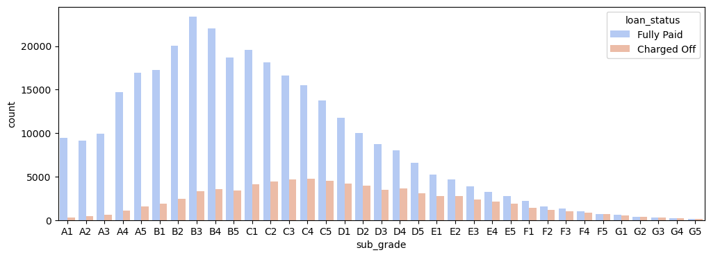
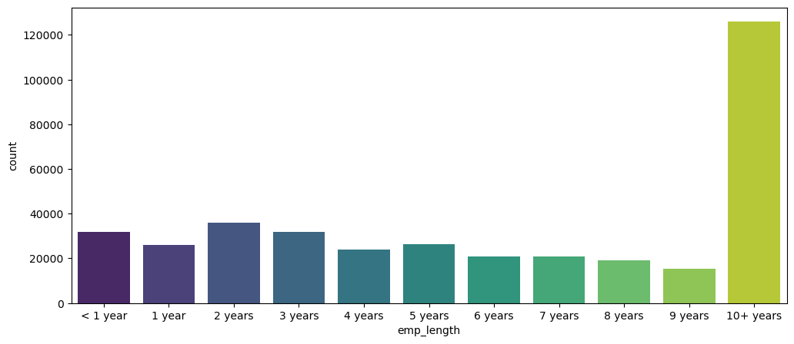

import pandas as pd
import numpy as np
import matplotlib.pyplot as plt
import seaborn as sns
%matplotlib inline
from sklearn.model_selection import train_test_split, StratifiedKFold
from sklearn.preprocessing import StandardScaler
from sklearn.metrics import classification_report, confusion_matrix, accuracy_score, f1_score
from sklearn.tree import DecisionTreeClassifier
from sklearn.ensemble import RandomForestClassifier
from sklearn.linear_model import LogisticRegression
import xgboost as xgb
import tensorflow as tf
from tensorflow.keras.models import Sequential
from tensorflow.keras.layers import Dense, Dropout
import optunaModel Selection and Hyperparameter Tuning using Optuna for Loan Charge-Off Prediction
Python
ML
Pandas
Seaborn
scikit-learn
TensorFlow
XGBoost
Optuna
After cleaning and preprocessing a modified LendingClub dataset of loan applicants I implement an Optuna study for both model selection and hyperparameter tuning with cross-validation to choose a model to predict if an unseen applicant will repay their loan.
print("Python version:")
!python --versionPython version:
Python 3.11.4print("Optuna version:")
print(optuna.__version__)Optuna version:
3.5.0print("TensorFlow version:")
print(tf.__version__)TensorFlow version:
2.14.0Data Imports
We use a modified LendingClub dataset from Kaggle, sourced from Udemy course by Jose Portilla.
Before preprocessing, the dataset has the following features:
| LoanStatNew | Description | |
|---|---|---|
| 0 | loan_amnt | The listed amount of the loan applied for by the borrower. If at some point in time, the credit department reduces the loan amount, then it will be reflected in this value. |
| 1 | term | The number of payments on the loan. Values are in months and can be either 36 or 60. |
| 2 | int_rate | Interest Rate on the loan |
| 3 | installment | The monthly payment owed by the borrower if the loan originates. |
| 4 | grade | LC assigned loan grade |
| 5 | sub_grade | LC assigned loan subgrade |
| 6 | emp_title | The job title supplied by the Borrower when applying for the loan.* |
| 7 | emp_length | Employment length in years. Possible values are between 0 and 10 where 0 means less than one year and 10 means ten or more years. |
| 8 | home_ownership | The home ownership status provided by the borrower during registration or obtained from the credit report. Our values are: RENT, OWN, MORTGAGE, OTHER |
| 9 | annual_inc | The self-reported annual income provided by the borrower during registration. |
| 10 | verification_status | Indicates if income was verified by LC, not verified, or if the income source was verified |
| 11 | issue_d | The month which the loan was funded |
| 12 | loan_status | Current status of the loan |
| 13 | purpose | A category provided by the borrower for the loan request. |
| 14 | title | The loan title provided by the borrower |
| 15 | zip_code | The first 3 numbers of the zip code provided by the borrower in the loan application. |
| 16 | addr_state | The state provided by the borrower in the loan application |
| 17 | dti | A ratio calculated using the borrower’s total monthly debt payments on the total debt obligations, excluding mortgage and the requested LC loan, divided by the borrower’s self-reported monthly income. |
| 18 | earliest_cr_line | The month the borrower’s earliest reported credit line was opened |
| 19 | open_acc | The number of open credit lines in the borrower’s credit file. |
| 20 | pub_rec | Number of derogatory public records |
| 21 | revol_bal | Total credit revolving balance |
| 22 | revol_util | Revolving line utilization rate, or the amount of credit the borrower is using relative to all available revolving credit. |
| 23 | total_acc | The total number of credit lines currently in the borrower’s credit file |
| 24 | initial_list_status | The initial listing status of the loan. Possible values are – W, F |
| 25 | application_type | Indicates whether the loan is an individual application or a joint application with two co-borrowers |
| 26 | mort_acc | Number of mortgage accounts. |
| 27 | pub_rec_bankruptcies | Number of public record bankruptcies |
—
df = pd.read_csv('lending_club_loan.csv')df.info()<class 'pandas.core.frame.DataFrame'>
RangeIndex: 396030 entries, 0 to 396029
Data columns (total 27 columns):
# Column Non-Null Count Dtype
--- ------ -------------- -----
0 loan_amnt 396030 non-null float64
1 term 396030 non-null object
2 int_rate 396030 non-null float64
3 installment 396030 non-null float64
4 grade 396030 non-null object
5 sub_grade 396030 non-null object
6 emp_title 373103 non-null object
7 emp_length 377729 non-null object
8 home_ownership 396030 non-null object
9 annual_inc 396030 non-null float64
10 verification_status 396030 non-null object
11 issue_d 396030 non-null object
12 loan_status 396030 non-null object
13 purpose 396030 non-null object
14 title 394274 non-null object
15 dti 396030 non-null float64
16 earliest_cr_line 396030 non-null object
17 open_acc 396030 non-null float64
18 pub_rec 396030 non-null float64
19 revol_bal 396030 non-null float64
20 revol_util 395754 non-null float64
21 total_acc 396030 non-null float64
22 initial_list_status 396030 non-null object
23 application_type 396030 non-null object
24 mort_acc 358235 non-null float64
25 pub_rec_bankruptcies 395495 non-null float64
26 address 396030 non-null object
dtypes: float64(12), object(15)
memory usage: 81.6+ MBdf.head()| loan_amnt | term | int_rate | installment | grade | sub_grade | emp_title | emp_length | home_ownership | annual_inc | ... | open_acc | pub_rec | revol_bal | revol_util | total_acc | initial_list_status | application_type | mort_acc | pub_rec_bankruptcies | address | |
|---|---|---|---|---|---|---|---|---|---|---|---|---|---|---|---|---|---|---|---|---|---|
| 0 | 10000.0 | 36 months | 11.44 | 329.48 | B | B4 | Marketing | 10+ years | RENT | 117000.0 | ... | 16.0 | 0.0 | 36369.0 | 41.8 | 25.0 | w | INDIVIDUAL | 0.0 | 0.0 | 0174 Michelle Gateway\r\nMendozaberg, OK 22690 |
| 1 | 8000.0 | 36 months | 11.99 | 265.68 | B | B5 | Credit analyst | 4 years | MORTGAGE | 65000.0 | ... | 17.0 | 0.0 | 20131.0 | 53.3 | 27.0 | f | INDIVIDUAL | 3.0 | 0.0 | 1076 Carney Fort Apt. 347\r\nLoganmouth, SD 05113 |
| 2 | 15600.0 | 36 months | 10.49 | 506.97 | B | B3 | Statistician | < 1 year | RENT | 43057.0 | ... | 13.0 | 0.0 | 11987.0 | 92.2 | 26.0 | f | INDIVIDUAL | 0.0 | 0.0 | 87025 Mark Dale Apt. 269\r\nNew Sabrina, WV 05113 |
| 3 | 7200.0 | 36 months | 6.49 | 220.65 | A | A2 | Client Advocate | 6 years | RENT | 54000.0 | ... | 6.0 | 0.0 | 5472.0 | 21.5 | 13.0 | f | INDIVIDUAL | 0.0 | 0.0 | 823 Reid Ford\r\nDelacruzside, MA 00813 |
| 4 | 24375.0 | 60 months | 17.27 | 609.33 | C | C5 | Destiny Management Inc. | 9 years | MORTGAGE | 55000.0 | ... | 13.0 | 0.0 | 24584.0 | 69.8 | 43.0 | f | INDIVIDUAL | 1.0 | 0.0 | 679 Luna Roads\r\nGreggshire, VA 11650 |
5 rows × 27 columns
Exploratory Data Analysis
In this section I produce some figures while exploring the distribution of the dataset.
The uninterested should feel free to skip forward a section
sns.countplot(x='loan_status',data=df)<Axes: xlabel='loan_status', ylabel='count'>sns.displot(df['loan_amnt'],kde=False)
df.corr(numeric_only=True)| loan_amnt | int_rate | installment | annual_inc | dti | open_acc | pub_rec | revol_bal | revol_util | total_acc | mort_acc | pub_rec_bankruptcies | |
|---|---|---|---|---|---|---|---|---|---|---|---|---|
| loan_amnt | 1.000000 | 0.168921 | 0.953929 | 0.336887 | 0.016636 | 0.198556 | -0.077779 | 0.328320 | 0.099911 | 0.223886 | 0.222315 | -0.106539 |
| int_rate | 0.168921 | 1.000000 | 0.162758 | -0.056771 | 0.079038 | 0.011649 | 0.060986 | -0.011280 | 0.293659 | -0.036404 | -0.082583 | 0.057450 |
| installment | 0.953929 | 0.162758 | 1.000000 | 0.330381 | 0.015786 | 0.188973 | -0.067892 | 0.316455 | 0.123915 | 0.202430 | 0.193694 | -0.098628 |
| annual_inc | 0.336887 | -0.056771 | 0.330381 | 1.000000 | -0.081685 | 0.136150 | -0.013720 | 0.299773 | 0.027871 | 0.193023 | 0.236320 | -0.050162 |
| dti | 0.016636 | 0.079038 | 0.015786 | -0.081685 | 1.000000 | 0.136181 | -0.017639 | 0.063571 | 0.088375 | 0.102128 | -0.025439 | -0.014558 |
| open_acc | 0.198556 | 0.011649 | 0.188973 | 0.136150 | 0.136181 | 1.000000 | -0.018392 | 0.221192 | -0.131420 | 0.680728 | 0.109205 | -0.027732 |
| pub_rec | -0.077779 | 0.060986 | -0.067892 | -0.013720 | -0.017639 | -0.018392 | 1.000000 | -0.101664 | -0.075910 | 0.019723 | 0.011552 | 0.699408 |
| revol_bal | 0.328320 | -0.011280 | 0.316455 | 0.299773 | 0.063571 | 0.221192 | -0.101664 | 1.000000 | 0.226346 | 0.191616 | 0.194925 | -0.124532 |
| revol_util | 0.099911 | 0.293659 | 0.123915 | 0.027871 | 0.088375 | -0.131420 | -0.075910 | 0.226346 | 1.000000 | -0.104273 | 0.007514 | -0.086751 |
| total_acc | 0.223886 | -0.036404 | 0.202430 | 0.193023 | 0.102128 | 0.680728 | 0.019723 | 0.191616 | -0.104273 | 1.000000 | 0.381072 | 0.042035 |
| mort_acc | 0.222315 | -0.082583 | 0.193694 | 0.236320 | -0.025439 | 0.109205 | 0.011552 | 0.194925 | 0.007514 | 0.381072 | 1.000000 | 0.027239 |
| pub_rec_bankruptcies | -0.106539 | 0.057450 | -0.098628 | -0.050162 | -0.014558 | -0.027732 | 0.699408 | -0.124532 | -0.086751 | 0.042035 | 0.027239 | 1.000000 |
plt.figure(figsize=(12,7))
sns.heatmap(df.corr(numeric_only=True),annot=True,cmap='viridis')<Axes: >
sns.scatterplot(data=df,x='installment',y='loan_amnt')<Axes: xlabel='installment', ylabel='loan_amnt'>sns.boxplot(data=df,x='loan_status',y='loan_amnt')<Axes: xlabel='loan_status', ylabel='loan_amnt'>
df.groupby('loan_status')['loan_amnt'].describe()| count | mean | std | min | 25% | 50% | 75% | max | |
|---|---|---|---|---|---|---|---|---|
| loan_status | ||||||||
| Charged Off | 77673.0 | 15126.300967 | 8505.090557 | 1000.0 | 8525.0 | 14000.0 | 20000.0 | 40000.0 |
| Fully Paid | 318357.0 | 13866.878771 | 8302.319699 | 500.0 | 7500.0 | 12000.0 | 19225.0 | 40000.0 |
df['grade'].unique()array(['B', 'A', 'C', 'E', 'D', 'F', 'G'], dtype=object)df['sub_grade'].unique()array(['B4', 'B5', 'B3', 'A2', 'C5', 'C3', 'A1', 'B2', 'C1', 'A5', 'E4',
'A4', 'A3', 'D1', 'C2', 'B1', 'D3', 'D5', 'D2', 'E1', 'E2', 'E5',
'F4', 'E3', 'D4', 'G1', 'F5', 'G2', 'C4', 'F1', 'F3', 'G5', 'G4',
'F2', 'G3'], dtype=object)sns.countplot(data=df,x='grade',hue='loan_status')<Axes: xlabel='grade', ylabel='count'>subgrade_order = sorted(df['sub_grade'].unique())
plt.figure(figsize=(12,4))
sns.countplot(data=df,
x='sub_grade',
order=subgrade_order,
palette='coolwarm',
hue='loan_status')<Axes: xlabel='sub_grade', ylabel='count'>
f_g = df[(df['grade'] == 'G') | (df['grade'] == 'F')]
subgrade_order = sorted(f_g['sub_grade'].unique())
plt.figure(figsize=(12,4))
sns.countplot(data=f_g,
x='sub_grade',
order=subgrade_order,
palette='coolwarm',
hue='loan_status')<Axes: xlabel='sub_grade', ylabel='count'>
Missing Values and Feature Engineering
Some of the columns in the dataframe have missing values which we need to fill before we can hope to train any machine learning models.
In this section we also conduct “feature engineering”, creating new columns from the existing columns in order to try and enhance the expressibility of the data.
The categorical features also need to be encoded. The machine learning algorithms I want to search over cannot all handle textual data such as ‘False’, so we need to conduct One Hot Encoding to ensure the dataframe only consists of numeric columns.
df['loan_repaid'] = (df['loan_status'] == 'Fully Paid').astype(int)
df[['loan_repaid','loan_status']]| loan_repaid | loan_status | |
|---|---|---|
| 0 | 1 | Fully Paid |
| 1 | 1 | Fully Paid |
| 2 | 1 | Fully Paid |
| 3 | 1 | Fully Paid |
| 4 | 0 | Charged Off |
| ... | ... | ... |
| 396025 | 1 | Fully Paid |
| 396026 | 1 | Fully Paid |
| 396027 | 1 | Fully Paid |
| 396028 | 1 | Fully Paid |
| 396029 | 1 | Fully Paid |
396030 rows × 2 columns
df.corr(numeric_only=True)['loan_repaid'].sort_values().drop('loan_repaid').plot(kind='bar')<Axes: >
Looking at how many missing values are present in each column of the dataframe:
df.isnull().sum()loan_amnt 0
term 0
int_rate 0
installment 0
grade 0
sub_grade 0
emp_title 22927
emp_length 18301
home_ownership 0
annual_inc 0
verification_status 0
issue_d 0
loan_status 0
purpose 0
title 1756
dti 0
earliest_cr_line 0
open_acc 0
pub_rec 0
revol_bal 0
revol_util 276
total_acc 0
initial_list_status 0
application_type 0
mort_acc 37795
pub_rec_bankruptcies 535
address 0
loan_repaid 0
dtype: int64Defining a function to print what percentages of columns these missing values correspond too.
def percentage_null(df):
percentage_missing = (df.isnull().sum()/len(df))*100
print('\nPercentages of values missing:\n')
print(percentage_missing.round(2))percentage_null(df)
Percentages of values missing:
loan_amnt 0.00
term 0.00
int_rate 0.00
installment 0.00
grade 0.00
sub_grade 0.00
emp_title 5.79
emp_length 4.62
home_ownership 0.00
annual_inc 0.00
verification_status 0.00
issue_d 0.00
loan_status 0.00
purpose 0.00
title 0.44
dti 0.00
earliest_cr_line 0.00
open_acc 0.00
pub_rec 0.00
revol_bal 0.00
revol_util 0.07
total_acc 0.00
initial_list_status 0.00
application_type 0.00
mort_acc 9.54
pub_rec_bankruptcies 0.14
address 0.00
loan_repaid 0.00
dtype: float64df['title']0 Vacation
1 Debt consolidation
2 Credit card refinancing
3 Credit card refinancing
4 Credit Card Refinance
...
396025 Debt consolidation
396026 Debt consolidation
396027 pay off credit cards
396028 Loanforpayoff
396029 Toxic Debt Payoff
Name: title, Length: 396030, dtype: objectdf['purpose']0 vacation
1 debt_consolidation
2 credit_card
3 credit_card
4 credit_card
...
396025 debt_consolidation
396026 debt_consolidation
396027 debt_consolidation
396028 debt_consolidation
396029 debt_consolidation
Name: purpose, Length: 396030, dtype: objectThe columns title and purpose are duplicates, so we can drop one without losing any information.
df = df.drop('title',axis=1)emp_title and emp_length
df['emp_title']0 Marketing
1 Credit analyst
2 Statistician
3 Client Advocate
4 Destiny Management Inc.
...
396025 licensed bankere
396026 Agent
396027 City Carrier
396028 Gracon Services, Inc
396029 Internal Revenue Service
Name: emp_title, Length: 396030, dtype: objectdf['emp_title'].nunique()173105emp_title has too many unique values to encode
df = df.drop('emp_title', axis=1)df['emp_length']0 10+ years
1 4 years
2 < 1 year
3 6 years
4 9 years
...
396025 2 years
396026 5 years
396027 10+ years
396028 10+ years
396029 10+ years
Name: emp_length, Length: 396030, dtype: objectsorted(df['emp_length'].dropna().unique())['1 year',
'10+ years',
'2 years',
'3 years',
'4 years',
'5 years',
'6 years',
'7 years',
'8 years',
'9 years',
'< 1 year']ordered_emp_lengths = ['< 1 year',
'1 year',
'2 years',
'3 years',
'4 years',
'5 years',
'6 years',
'7 years',
'8 years',
'9 years',
'10+ years']plt.figure(figsize=(12,5))
sns.countplot(data=df,
x='emp_length',
order=ordered_emp_lengths,
palette='viridis')<Axes: xlabel='emp_length', ylabel='count'>
plt.figure(figsize=(12,5))
sns.countplot(data=df,
x='emp_length',
order=ordered_emp_lengths,
hue='loan_repaid')<Axes: xlabel='emp_length', ylabel='count'>
emp_co = df[df['loan_repaid'] == 0].groupby('emp_length').count()['loan_repaid']
emp_fp = df[df['loan_repaid'] == 1].groupby('emp_length').count()['loan_repaid']
plt.figure(figsize=(6,2))
((emp_co/(emp_fp+emp_co))*100).plot(kind='bar')<Axes: xlabel='emp_length'>
emp_length doesn’t look to tell us anything about loan_repaid. Very similar fractions of all employment lengths did not manage to repay their loans, so we drop this column too.
df = df.drop('emp_length',axis=1)Filling mort_acc using total_acc
percentage_null(df)
Percentages of values missing:
loan_amnt 0.00
term 0.00
int_rate 0.00
installment 0.00
grade 0.00
sub_grade 0.00
home_ownership 0.00
annual_inc 0.00
verification_status 0.00
issue_d 0.00
loan_status 0.00
purpose 0.00
dti 0.00
earliest_cr_line 0.00
open_acc 0.00
pub_rec 0.00
revol_bal 0.00
revol_util 0.07
total_acc 0.00
initial_list_status 0.00
application_type 0.00
mort_acc 9.54
pub_rec_bankruptcies 0.14
address 0.00
loan_repaid 0.00
dtype: float64df['mort_acc'].value_counts()mort_acc
0.0 139777
1.0 60416
2.0 49948
3.0 38049
4.0 27887
5.0 18194
6.0 11069
7.0 6052
8.0 3121
9.0 1656
10.0 865
11.0 479
12.0 264
13.0 146
14.0 107
15.0 61
16.0 37
17.0 22
18.0 18
19.0 15
20.0 13
24.0 10
22.0 7
21.0 4
25.0 4
27.0 3
32.0 2
31.0 2
23.0 2
26.0 2
28.0 1
30.0 1
34.0 1
Name: count, dtype: int64df.corr(numeric_only=True)['mort_acc'].sort_values()int_rate -0.082583
dti -0.025439
revol_util 0.007514
pub_rec 0.011552
pub_rec_bankruptcies 0.027239
loan_repaid 0.073111
open_acc 0.109205
installment 0.193694
revol_bal 0.194925
loan_amnt 0.222315
annual_inc 0.236320
total_acc 0.381072
mort_acc 1.000000
Name: mort_acc, dtype: float64mort_acc correlates most strongly with total_acc, so we can leverage the fact that total_acc has no missing values to fill the missing values in mort_acc
total_acc_avgs = df.groupby('total_acc').mean(numeric_only=True)['mort_acc']def fill_mort_acc(total_acc,mort_acc):
if np.isnan(mort_acc):
return total_acc_avgs[total_acc]
else:
return mort_accdf['mort_acc'] = df.apply(lambda x: fill_mort_acc(x['total_acc'],x['mort_acc']),axis=1)df.isnull().sum()loan_amnt 0
term 0
int_rate 0
installment 0
grade 0
sub_grade 0
home_ownership 0
annual_inc 0
verification_status 0
issue_d 0
loan_status 0
purpose 0
dti 0
earliest_cr_line 0
open_acc 0
pub_rec 0
revol_bal 0
revol_util 276
total_acc 0
initial_list_status 0
application_type 0
mort_acc 0
pub_rec_bankruptcies 535
address 0
loan_repaid 0
dtype: int64percentage_null(df)
Percentages of values missing:
loan_amnt 0.00
term 0.00
int_rate 0.00
installment 0.00
grade 0.00
sub_grade 0.00
home_ownership 0.00
annual_inc 0.00
verification_status 0.00
issue_d 0.00
loan_status 0.00
purpose 0.00
dti 0.00
earliest_cr_line 0.00
open_acc 0.00
pub_rec 0.00
revol_bal 0.00
revol_util 0.07
total_acc 0.00
initial_list_status 0.00
application_type 0.00
mort_acc 0.00
pub_rec_bankruptcies 0.14
address 0.00
loan_repaid 0.00
dtype: float64Only a neglible amount of rows still have missing data points, so we now feel comfortable dropping these rows
df = df.dropna()percentage_null(df)
Percentages of values missing:
loan_amnt 0.0
term 0.0
int_rate 0.0
installment 0.0
grade 0.0
sub_grade 0.0
home_ownership 0.0
annual_inc 0.0
verification_status 0.0
issue_d 0.0
loan_status 0.0
purpose 0.0
dti 0.0
earliest_cr_line 0.0
open_acc 0.0
pub_rec 0.0
revol_bal 0.0
revol_util 0.0
total_acc 0.0
initial_list_status 0.0
application_type 0.0
mort_acc 0.0
pub_rec_bankruptcies 0.0
address 0.0
loan_repaid 0.0
dtype: float64Categorical Features
Here we treat the categorical features such as home_ownership and purpose by either dropping them or one-hot encoding them as to end with a dataframe consisting only of numeric features.
df.select_dtypes(['object']).columnsIndex(['term', 'grade', 'sub_grade', 'home_ownership', 'verification_status',
'issue_d', 'loan_status', 'purpose', 'earliest_cr_line',
'initial_list_status', 'application_type', 'address'],
dtype='object')df['term'].value_counts()term
36 months 301247
60 months 93972
Name: count, dtype: int64df['term'] = df['term'].apply(lambda x: int(x.split()[0]))df['term']0 36
1 36
2 36
3 36
4 60
..
396025 60
396026 36
396027 36
396028 60
396029 36
Name: term, Length: 395219, dtype: int64df['zip_code'] = df['address'].apply(lambda address: address[-5:])df['zip_code'].value_counts()zip_code
70466 56880
22690 56413
30723 56402
48052 55811
00813 45725
29597 45393
05113 45300
11650 11210
93700 11126
86630 10959
Name: count, dtype: int64df['home_ownership'].value_counts()home_ownership
MORTGAGE 198022
RENT 159395
OWN 37660
OTHER 110
NONE 29
ANY 3
Name: count, dtype: int64df['home_ownership'] = df['home_ownership'].replace(['NONE','ANY'],'OTHER')df['home_ownership'].value_counts()home_ownership
MORTGAGE 198022
RENT 159395
OWN 37660
OTHER 142
Name: count, dtype: int64one-hot encoding with pandas.get_dummies:
columns_to_1hot = ['home_ownership',
'verification_status',
'application_type',
'initial_list_status',
'purpose',
'zip_code',
'sub_grade']df = pd.get_dummies(data=df,
columns=columns_to_1hot,
drop_first=True,
dtype=int)df.columnsIndex(['loan_amnt', 'term', 'int_rate', 'installment', 'grade', 'annual_inc',
'issue_d', 'loan_status', 'dti', 'earliest_cr_line', 'open_acc',
'pub_rec', 'revol_bal', 'revol_util', 'total_acc', 'mort_acc',
'pub_rec_bankruptcies', 'address', 'loan_repaid',
'home_ownership_OTHER', 'home_ownership_OWN', 'home_ownership_RENT',
'verification_status_Source Verified', 'verification_status_Verified',
'application_type_INDIVIDUAL', 'application_type_JOINT',
'initial_list_status_w', 'purpose_credit_card',
'purpose_debt_consolidation', 'purpose_educational',
'purpose_home_improvement', 'purpose_house', 'purpose_major_purchase',
'purpose_medical', 'purpose_moving', 'purpose_other',
'purpose_renewable_energy', 'purpose_small_business',
'purpose_vacation', 'purpose_wedding', 'zip_code_05113',
'zip_code_11650', 'zip_code_22690', 'zip_code_29597', 'zip_code_30723',
'zip_code_48052', 'zip_code_70466', 'zip_code_86630', 'zip_code_93700',
'sub_grade_A2', 'sub_grade_A3', 'sub_grade_A4', 'sub_grade_A5',
'sub_grade_B1', 'sub_grade_B2', 'sub_grade_B3', 'sub_grade_B4',
'sub_grade_B5', 'sub_grade_C1', 'sub_grade_C2', 'sub_grade_C3',
'sub_grade_C4', 'sub_grade_C5', 'sub_grade_D1', 'sub_grade_D2',
'sub_grade_D3', 'sub_grade_D4', 'sub_grade_D5', 'sub_grade_E1',
'sub_grade_E2', 'sub_grade_E3', 'sub_grade_E4', 'sub_grade_E5',
'sub_grade_F1', 'sub_grade_F2', 'sub_grade_F3', 'sub_grade_F4',
'sub_grade_F5', 'sub_grade_G1', 'sub_grade_G2', 'sub_grade_G3',
'sub_grade_G4', 'sub_grade_G5'],
dtype='object')df['earliest_cr_line']0 Jun-1990
1 Jul-2004
2 Aug-2007
3 Sep-2006
4 Mar-1999
...
396025 Nov-2004
396026 Feb-2006
396027 Mar-1997
396028 Nov-1990
396029 Sep-1998
Name: earliest_cr_line, Length: 395219, dtype: objectdf['earliest_cr_year'] = df['earliest_cr_line'].apply(lambda x: int(x.split('-')[-1]))df['earliest_cr_year']0 1990
1 2004
2 2007
3 2006
4 1999
...
396025 2004
396026 2006
396027 1997
396028 1990
396029 1998
Name: earliest_cr_year, Length: 395219, dtype: int64Dropping categorical features not worth encoding:
columns_to_drop = ['earliest_cr_line',
'grade',
'issue_d',
'loan_status',
'address']df = df.drop(columns_to_drop,axis=1)Preprocessing
After our feature engineering we have the following dataset:
df| loan_amnt | term | int_rate | installment | annual_inc | dti | open_acc | pub_rec | revol_bal | revol_util | ... | sub_grade_F2 | sub_grade_F3 | sub_grade_F4 | sub_grade_F5 | sub_grade_G1 | sub_grade_G2 | sub_grade_G3 | sub_grade_G4 | sub_grade_G5 | earliest_cr_year | |
|---|---|---|---|---|---|---|---|---|---|---|---|---|---|---|---|---|---|---|---|---|---|
| 0 | 10000.0 | 36 | 11.44 | 329.48 | 117000.0 | 26.24 | 16.0 | 0.0 | 36369.0 | 41.8 | ... | 0 | 0 | 0 | 0 | 0 | 0 | 0 | 0 | 0 | 1990 |
| 1 | 8000.0 | 36 | 11.99 | 265.68 | 65000.0 | 22.05 | 17.0 | 0.0 | 20131.0 | 53.3 | ... | 0 | 0 | 0 | 0 | 0 | 0 | 0 | 0 | 0 | 2004 |
| 2 | 15600.0 | 36 | 10.49 | 506.97 | 43057.0 | 12.79 | 13.0 | 0.0 | 11987.0 | 92.2 | ... | 0 | 0 | 0 | 0 | 0 | 0 | 0 | 0 | 0 | 2007 |
| 3 | 7200.0 | 36 | 6.49 | 220.65 | 54000.0 | 2.60 | 6.0 | 0.0 | 5472.0 | 21.5 | ... | 0 | 0 | 0 | 0 | 0 | 0 | 0 | 0 | 0 | 2006 |
| 4 | 24375.0 | 60 | 17.27 | 609.33 | 55000.0 | 33.95 | 13.0 | 0.0 | 24584.0 | 69.8 | ... | 0 | 0 | 0 | 0 | 0 | 0 | 0 | 0 | 0 | 1999 |
| ... | ... | ... | ... | ... | ... | ... | ... | ... | ... | ... | ... | ... | ... | ... | ... | ... | ... | ... | ... | ... | ... |
| 396025 | 10000.0 | 60 | 10.99 | 217.38 | 40000.0 | 15.63 | 6.0 | 0.0 | 1990.0 | 34.3 | ... | 0 | 0 | 0 | 0 | 0 | 0 | 0 | 0 | 0 | 2004 |
| 396026 | 21000.0 | 36 | 12.29 | 700.42 | 110000.0 | 21.45 | 6.0 | 0.0 | 43263.0 | 95.7 | ... | 0 | 0 | 0 | 0 | 0 | 0 | 0 | 0 | 0 | 2006 |
| 396027 | 5000.0 | 36 | 9.99 | 161.32 | 56500.0 | 17.56 | 15.0 | 0.0 | 32704.0 | 66.9 | ... | 0 | 0 | 0 | 0 | 0 | 0 | 0 | 0 | 0 | 1997 |
| 396028 | 21000.0 | 60 | 15.31 | 503.02 | 64000.0 | 15.88 | 9.0 | 0.0 | 15704.0 | 53.8 | ... | 0 | 0 | 0 | 0 | 0 | 0 | 0 | 0 | 0 | 1990 |
| 396029 | 2000.0 | 36 | 13.61 | 67.98 | 42996.0 | 8.32 | 3.0 | 0.0 | 4292.0 | 91.3 | ... | 0 | 0 | 0 | 0 | 0 | 0 | 0 | 0 | 0 | 1998 |
395219 rows × 79 columns
df.info()<class 'pandas.core.frame.DataFrame'>
Index: 395219 entries, 0 to 396029
Data columns (total 79 columns):
# Column Non-Null Count Dtype
--- ------ -------------- -----
0 loan_amnt 395219 non-null float64
1 term 395219 non-null int64
2 int_rate 395219 non-null float64
3 installment 395219 non-null float64
4 annual_inc 395219 non-null float64
5 dti 395219 non-null float64
6 open_acc 395219 non-null float64
7 pub_rec 395219 non-null float64
8 revol_bal 395219 non-null float64
9 revol_util 395219 non-null float64
10 total_acc 395219 non-null float64
11 mort_acc 395219 non-null float64
12 pub_rec_bankruptcies 395219 non-null float64
13 loan_repaid 395219 non-null int32
14 home_ownership_OTHER 395219 non-null int32
15 home_ownership_OWN 395219 non-null int32
16 home_ownership_RENT 395219 non-null int32
17 verification_status_Source Verified 395219 non-null int32
18 verification_status_Verified 395219 non-null int32
19 application_type_INDIVIDUAL 395219 non-null int32
20 application_type_JOINT 395219 non-null int32
21 initial_list_status_w 395219 non-null int32
22 purpose_credit_card 395219 non-null int32
23 purpose_debt_consolidation 395219 non-null int32
24 purpose_educational 395219 non-null int32
25 purpose_home_improvement 395219 non-null int32
26 purpose_house 395219 non-null int32
27 purpose_major_purchase 395219 non-null int32
28 purpose_medical 395219 non-null int32
29 purpose_moving 395219 non-null int32
30 purpose_other 395219 non-null int32
31 purpose_renewable_energy 395219 non-null int32
32 purpose_small_business 395219 non-null int32
33 purpose_vacation 395219 non-null int32
34 purpose_wedding 395219 non-null int32
35 zip_code_05113 395219 non-null int32
36 zip_code_11650 395219 non-null int32
37 zip_code_22690 395219 non-null int32
38 zip_code_29597 395219 non-null int32
39 zip_code_30723 395219 non-null int32
40 zip_code_48052 395219 non-null int32
41 zip_code_70466 395219 non-null int32
42 zip_code_86630 395219 non-null int32
43 zip_code_93700 395219 non-null int32
44 sub_grade_A2 395219 non-null int32
45 sub_grade_A3 395219 non-null int32
46 sub_grade_A4 395219 non-null int32
47 sub_grade_A5 395219 non-null int32
48 sub_grade_B1 395219 non-null int32
49 sub_grade_B2 395219 non-null int32
50 sub_grade_B3 395219 non-null int32
51 sub_grade_B4 395219 non-null int32
52 sub_grade_B5 395219 non-null int32
53 sub_grade_C1 395219 non-null int32
54 sub_grade_C2 395219 non-null int32
55 sub_grade_C3 395219 non-null int32
56 sub_grade_C4 395219 non-null int32
57 sub_grade_C5 395219 non-null int32
58 sub_grade_D1 395219 non-null int32
59 sub_grade_D2 395219 non-null int32
60 sub_grade_D3 395219 non-null int32
61 sub_grade_D4 395219 non-null int32
62 sub_grade_D5 395219 non-null int32
63 sub_grade_E1 395219 non-null int32
64 sub_grade_E2 395219 non-null int32
65 sub_grade_E3 395219 non-null int32
66 sub_grade_E4 395219 non-null int32
67 sub_grade_E5 395219 non-null int32
68 sub_grade_F1 395219 non-null int32
69 sub_grade_F2 395219 non-null int32
70 sub_grade_F3 395219 non-null int32
71 sub_grade_F4 395219 non-null int32
72 sub_grade_F5 395219 non-null int32
73 sub_grade_G1 395219 non-null int32
74 sub_grade_G2 395219 non-null int32
75 sub_grade_G3 395219 non-null int32
76 sub_grade_G4 395219 non-null int32
77 sub_grade_G5 395219 non-null int32
78 earliest_cr_year 395219 non-null int64
dtypes: float64(12), int32(65), int64(2)
memory usage: 143.2 MBdf.columnsIndex(['loan_amnt', 'term', 'int_rate', 'installment', 'annual_inc', 'dti',
'open_acc', 'pub_rec', 'revol_bal', 'revol_util', 'total_acc',
'mort_acc', 'pub_rec_bankruptcies', 'loan_repaid',
'home_ownership_OTHER', 'home_ownership_OWN', 'home_ownership_RENT',
'verification_status_Source Verified', 'verification_status_Verified',
'application_type_INDIVIDUAL', 'application_type_JOINT',
'initial_list_status_w', 'purpose_credit_card',
'purpose_debt_consolidation', 'purpose_educational',
'purpose_home_improvement', 'purpose_house', 'purpose_major_purchase',
'purpose_medical', 'purpose_moving', 'purpose_other',
'purpose_renewable_energy', 'purpose_small_business',
'purpose_vacation', 'purpose_wedding', 'zip_code_05113',
'zip_code_11650', 'zip_code_22690', 'zip_code_29597', 'zip_code_30723',
'zip_code_48052', 'zip_code_70466', 'zip_code_86630', 'zip_code_93700',
'sub_grade_A2', 'sub_grade_A3', 'sub_grade_A4', 'sub_grade_A5',
'sub_grade_B1', 'sub_grade_B2', 'sub_grade_B3', 'sub_grade_B4',
'sub_grade_B5', 'sub_grade_C1', 'sub_grade_C2', 'sub_grade_C3',
'sub_grade_C4', 'sub_grade_C5', 'sub_grade_D1', 'sub_grade_D2',
'sub_grade_D3', 'sub_grade_D4', 'sub_grade_D5', 'sub_grade_E1',
'sub_grade_E2', 'sub_grade_E3', 'sub_grade_E4', 'sub_grade_E5',
'sub_grade_F1', 'sub_grade_F2', 'sub_grade_F3', 'sub_grade_F4',
'sub_grade_F5', 'sub_grade_G1', 'sub_grade_G2', 'sub_grade_G3',
'sub_grade_G4', 'sub_grade_G5', 'earliest_cr_year'],
dtype='object')TRAIN/TEST SPLIT
Splitting the dataset into a training set and a test set:
(Note that cross-validation is performed inside the Optuna study, so we don’t need to separate out a validation set here)
X = df.drop('loan_repaid', axis=1).values
y = df['loan_repaid'].values
features = df.columns.drop('loan_repaid')
target = 'loan_repaid'
X_train, X_test, y_train, y_test = train_test_split(X, y, test_size=0.05, random_state=594)
# Convert to DataFrame and add column names
X_test_df = pd.DataFrame(X_test, columns=features)
y_test_df = pd.DataFrame(y_test, columns=[target])
df_test = pd.concat([X_test_df, y_test_df], axis=1)print("Training set shape: ", X_train.shape, y_train.shape)
print("Test set shape: ", X_test.shape, y_test.shape)Training set shape: (375458, 78) (375458,)
Test set shape: (19761, 78) (19761,)Normalising the Data
Some machine learning algorithms require all columns of the dataframe to consist of data on comparable scales. We use StandardScalar from scikit-learn to force this to be true.
There is rarely a drawback to normalising data like this. If in doubt, normalise.
scaler = StandardScaler()X_train = scaler.fit_transform(X_train)
X_test = scaler.transform(X_test)X_trainarray([[ 0.82301704, -0.55823002, -1.28362299, ..., -0.03076372,
-0.02818382, -2.75955691],
[-1.45078579, -0.55823002, -0.46740923, ..., -0.03076372,
-0.02818382, 0.01934793],
[-1.25930765, -0.55823002, 1.14265627, ..., -0.03076372,
-0.02818382, 0.5751289 ],
...,
[ 0.70334321, -0.55823002, -0.36901634, ..., -0.03076372,
-0.02818382, 0.29723841],
[ 1.90008154, -0.55823002, -0.33994571, ..., -0.03076372,
-0.02818382, -1.78694022],
[-0.52929727, -0.55823002, -1.17404909, ..., -0.03076372,
-0.02818382, -0.25854255]])Model Selection and Hyperparameter Tuning with Optuna
The following two code cells implement an Optuna study to select a model with tuned hyperparameters to maximize the F1 score using cross-validation.
We tune to maximize the F1 score of the classifiers rather than other metrics (such as classification accuracy) because the target
loan_repaidis imbalanced.The model choices searched over are
DecisionTreeClassifier,RandomForestClassifierandLogisticRegressionfrom sklearn,XGBClassifierfrom XGBoost and artificial neural networks (of varying architecture) implemented in TensorFlow.The architecture of the neural networks is also tuned. The number of hidden layers is allowed to range from 1 to 6 (inclusive) and the number of units per hidden layer ranges from 32 to 512. The only activation function considered for the hidden layers is ReLU.
I initially attempted to seperate the model selection and hyperparameter tuning by implementing a seperate Optuna study for each choice of model. Due to the size of the dataset this proved to be impractical.
Combining the model selection and hyperparameter tuning into a single Optuna study is elegant and allows for a more automated tuning process. It also allows for computational gains due to the shared hyperparameters between the tree-based models
DecisionTreeClasifier,RandomForestClassifierandXGBClassifier. In expense for the higher degree of automation the user gains less insight into the reasons behind the model selection than they would if the model was selected manually.Attempts to incorporate a support vector machine (
SVCfrom sklearn) into the study failed due to the training time required.
def objective(trial):
model_type = trial.suggest_categorical('model_type', ['random_forest', 'decision_tree', 'xgboost', 'neural_network', 'logistic_regression'])
# Initializing hyperparameters and model for each possible choice of model:
if model_type in ['random_forest', 'decision_tree', 'xgboost']:
# Shared hyperparameters for RandomForest, DecisionTree, and XGBoost:
max_depth = trial.suggest_int('max_depth', 2, 32)
min_samples_split = trial.suggest_int('min_samples_split', 2, 10)
min_samples_leaf = trial.suggest_int('min_samples_leaf', 1, 4)
if model_type == 'decision_tree':
model = DecisionTreeClassifier(
max_depth=max_depth,
min_samples_split=min_samples_split,
min_samples_leaf=min_samples_leaf,
)
elif model_type in ['random_forest','xgboost']:
# Shared hyperparameters for RandomForest and XGBoost but not DecisionTree:
n_estimators = trial.suggest_int('n_estimators', 10, 300)
if model_type == 'random_forest':
model = RandomForestClassifier(
n_estimators=n_estimators,
max_depth=max_depth,
min_samples_split=min_samples_split,
min_samples_leaf=min_samples_leaf,
)
elif model_type == 'xgboost':
learning_rate_xgb = trial.suggest_float('learning_rate_xgb', 0.01, 0.2)
min_child_weight = trial.suggest_int('min_child_weight', 1, 7)
subsample = trial.suggest_float('subsample', 0.8, 1.0)
reg_alpha = trial.suggest_float('reg_alpha', 0, 1.0)
reg_lambda = trial.suggest_float('reg_lambda', 0, 1.0)
colsample_bytree = trial.suggest_float('colsample_bytree', 0.8, 1.0)
gamma = trial.suggest_float('gamma', 0, 0.3)
model = xgb.XGBClassifier(
learning_rate=learning_rate_xgb,
n_estimators=n_estimators,
max_depth=max_depth,
min_child_weight=min_child_weight,
subsample=subsample,
colsample_bytree=colsample_bytree,
gamma=gamma,
reg_alpha=reg_alpha,
reg_lambda=reg_lambda
)
elif model_type == 'logistic_regression':
C = trial.suggest_float('C', 1e-5, 1e5, log=True)
model = LogisticRegression(C=C, penalty='l2', max_iter=1000)
elif model_type == 'neural_network':
# NeuralNetwork-specific hyperparameters
n_hidden_layers = trial.suggest_int('n_hidden_layers', 1, 6)
learning_rate = trial.suggest_float('learning_rate', 1e-5, 1e-1, log=True)
batch_size = trial.suggest_categorical('batch_size',[64, 128, 256, 512])
# Create the model
model = Sequential()
model.add(Dense(78, input_dim=78, activation='relu'))
for i in range(n_hidden_layers):
model.add(Dense(trial.suggest_categorical(f'n_units_{i+1}', [32, 64, 128, 256]), activation='relu'))
model.add(Dropout(0.7))
model.add(Dense(1, activation='sigmoid'))
model.compile(
loss=tf.keras.losses.BinaryCrossentropy(),
optimizer=tf.keras.optimizers.Adam(learning_rate),
)
# Training with Cross-Validation
cv = StratifiedKFold(n_splits=5, shuffle=True, random_state=594)
f1_scores = []
for train_idx, val_idx in cv.split(X_train, y_train):
X_cv_train, X_cv_val = X_train[train_idx], X_train[val_idx]
y_cv_train, y_cv_val = y_train[train_idx], y_train[val_idx]
if model_type == 'neural_network': # Neural Networks have a different syntax for model.fit
model.fit(X_cv_train,
y_cv_train,
epochs=25,
batch_size=batch_size,
verbose=0)
else:
model.fit(X_cv_train, y_cv_train)
y_pred = np.round(model.predict(X_cv_val))
f1_scores.append(f1_score(y_cv_val, y_pred))
# Defining the score as the mean of the f1 scores for each fold
score = np.mean(f1_scores)
return scorestudy = optuna.create_study(direction='maximize')
study.optimize(objective, n_trials=20)[I 2024-03-18 22:06:40,744] A new study created in memory with name: no-name-57f734b0-8962-432d-bfb6-59471441a5f4
[I 2024-03-18 22:06:48,434] Trial 0 finished with value: 0.9348813881269542 and parameters: {'model_type': 'decision_tree', 'max_depth': 3, 'min_samples_split': 7, 'min_samples_leaf': 4}. Best is trial 0 with value: 0.9348813881269542.
[I 2024-03-18 22:07:02,292] Trial 1 finished with value: 0.9351173423793565 and parameters: {'model_type': 'logistic_regression', 'C': 0.003376487874914207}. Best is trial 1 with value: 0.9351173423793565.
[I 2024-03-18 22:07:27,675] Trial 2 finished with value: 0.9308350280356752 and parameters: {'model_type': 'decision_tree', 'max_depth': 16, 'min_samples_split': 9, 'min_samples_leaf': 3}. Best is trial 1 with value: 0.9351173423793565.
[I 2024-03-18 22:15:32,269] Trial 3 finished with value: 0.9350101137588679 and parameters: {'model_type': 'xgboost', 'max_depth': 28, 'min_samples_split': 5, 'min_samples_leaf': 1, 'n_estimators': 184, 'learning_rate_xgb': 0.016618408577867994, 'min_child_weight': 5, 'subsample': 0.8917198401161827, 'reg_alpha': 0.8616141785378104, 'reg_lambda': 0.7523759516329682, 'colsample_bytree': 0.8157162246657587, 'gamma': 0.28038167915123857}. Best is trial 1 with value: 0.9351173423793565.
[I 2024-03-18 22:20:42,102] Trial 4 finished with value: 0.9321975043732882 and parameters: {'model_type': 'xgboost', 'max_depth': 15, 'min_samples_split': 9, 'min_samples_leaf': 4, 'n_estimators': 219, 'learning_rate_xgb': 0.16305096746719058, 'min_child_weight': 7, 'subsample': 0.9134170979002356, 'reg_alpha': 0.26508659053047456, 'reg_lambda': 0.138587811192453, 'colsample_bytree': 0.8552290270444581, 'gamma': 0.1061279968034901}. Best is trial 1 with value: 0.9351173423793565.
[I 2024-03-18 22:21:10,756] Trial 5 finished with value: 0.9243288921392534 and parameters: {'model_type': 'decision_tree', 'max_depth': 19, 'min_samples_split': 2, 'min_samples_leaf': 2}. Best is trial 1 with value: 0.9351173423793565.
[I 2024-03-18 22:21:59,392] Trial 6 finished with value: 0.9349168875035684 and parameters: {'model_type': 'xgboost', 'max_depth': 11, 'min_samples_split': 4, 'min_samples_leaf': 3, 'n_estimators': 43, 'learning_rate_xgb': 0.175014877747516, 'min_child_weight': 1, 'subsample': 0.9870392659632631, 'reg_alpha': 0.7735504526827838, 'reg_lambda': 0.17110783013189612, 'colsample_bytree': 0.9737179700729804, 'gamma': 0.15108925636371232}. Best is trial 1 with value: 0.9351173423793565.
[I 2024-03-18 22:22:23,025] Trial 7 finished with value: 0.9334728765188016 and parameters: {'model_type': 'decision_tree', 'max_depth': 14, 'min_samples_split': 6, 'min_samples_leaf': 2}. Best is trial 1 with value: 0.9351173423793565.
[I 2024-03-18 22:25:01,738] Trial 8 finished with value: 0.932800002007825 and parameters: {'model_type': 'xgboost', 'max_depth': 16, 'min_samples_split': 9, 'min_samples_leaf': 1, 'n_estimators': 91, 'learning_rate_xgb': 0.18146088009665673, 'min_child_weight': 2, 'subsample': 0.8679306976916659, 'reg_alpha': 0.8252235195309418, 'reg_lambda': 0.712616986557245, 'colsample_bytree': 0.9125270189180515, 'gamma': 0.1686125594604482}. Best is trial 1 with value: 0.9351173423793565.
[I 2024-03-18 22:33:49,108] Trial 9 finished with value: 0.7142288590214265 and parameters: {'model_type': 'neural_network', 'n_hidden_layers': 5, 'learning_rate': 0.0007589397505339159, 'batch_size': 256, 'n_units_1': 32, 'n_units_2': 256, 'n_units_3': 128, 'n_units_4': 32, 'n_units_5': 32}. Best is trial 1 with value: 0.9351173423793565.
[I 2024-03-18 22:34:00,258] Trial 10 finished with value: 0.9351463663145185 and parameters: {'model_type': 'logistic_regression', 'C': 0.0016662846208744218}. Best is trial 10 with value: 0.9351463663145185.
[I 2024-03-18 22:34:09,393] Trial 11 finished with value: 0.9351004010191634 and parameters: {'model_type': 'logistic_regression', 'C': 0.0010317129078925686}. Best is trial 10 with value: 0.9351463663145185.
[I 2024-03-18 22:34:22,985] Trial 12 finished with value: 0.9351229667198243 and parameters: {'model_type': 'logistic_regression', 'C': 0.0034007756162559443}. Best is trial 10 with value: 0.9351463663145185.
[I 2024-03-18 22:35:58,457] Trial 13 finished with value: 0.9349544159815644 and parameters: {'model_type': 'logistic_regression', 'C': 12.73995665452104}. Best is trial 10 with value: 0.9351463663145185.
[I 2024-03-18 22:54:25,454] Trial 14 finished with value: 0.9351871782786303 and parameters: {'model_type': 'random_forest', 'max_depth': 32, 'min_samples_split': 2, 'min_samples_leaf': 1, 'n_estimators': 279}. Best is trial 14 with value: 0.9351871782786303.
[I 2024-03-18 23:13:43,695] Trial 15 finished with value: 0.9351857977737448 and parameters: {'model_type': 'random_forest', 'max_depth': 32, 'min_samples_split': 2, 'min_samples_leaf': 1, 'n_estimators': 293}. Best is trial 14 with value: 0.9351871782786303.
[I 2024-03-18 23:33:04,396] Trial 16 finished with value: 0.935266998582307 and parameters: {'model_type': 'random_forest', 'max_depth': 31, 'min_samples_split': 2, 'min_samples_leaf': 1, 'n_estimators': 297}. Best is trial 16 with value: 0.935266998582307.
[I 2024-03-18 23:49:25,148] Trial 17 finished with value: 0.9351134430131598 and parameters: {'model_type': 'random_forest', 'max_depth': 25, 'min_samples_split': 3, 'min_samples_leaf': 2, 'n_estimators': 291}. Best is trial 16 with value: 0.935266998582307.
[I 2024-03-19 00:05:11,031] Trial 18 finished with value: 0.9351522931336632 and parameters: {'model_type': 'random_forest', 'max_depth': 32, 'min_samples_split': 4, 'min_samples_leaf': 1, 'n_estimators': 241}. Best is trial 16 with value: 0.935266998582307.
[I 2024-03-19 00:21:55,036] Trial 19 finished with value: 0.9351375564429716 and parameters: {'model_type': 'random_forest', 'max_depth': 24, 'min_samples_split': 2, 'min_samples_leaf': 1, 'n_estimators': 300}. Best is trial 16 with value: 0.935266998582307.2347/2347 [==============================] - 2s 790us/step
2347/2347 [==============================] - 2s 776us/step
2347/2347 [==============================] - 2s 785us/step
2347/2347 [==============================] - 2s 795us/step
2347/2347 [==============================] - 2s 779us/stepparams = study.best_params
print('Best parameters found by the study:\n', params)Best parameters found by the study:
{'model_type': 'random_forest', 'max_depth': 31, 'min_samples_split': 2, 'min_samples_leaf': 1, 'n_estimators': 297}Fitting the Best Model and Predicting on Test Set
The Optuna study tried all of the allowed models at least once, and settled on a RandomForestClassifier being the one that maxmised the mean of the F1 scores across each fold of the cross-validation.
Initialising and fitting this model to the train set:
params = {'max_depth': 31, 'min_samples_split': 2, 'min_samples_leaf': 1, 'n_estimators': 297}model = RandomForestClassifier(**params)model.fit(X_train, y_train)RandomForestClassifier(max_depth=31, n_estimators=297)In a Jupyter environment, please rerun this cell to show the HTML representation or trust the notebook.
On GitHub, the HTML representation is unable to render, please try loading this page with nbviewer.org.
RandomForestClassifier(max_depth=31, n_estimators=297)
y_pred = model.predict(X_test)print('F1 Score of best model on test set: ', f1_score(y_test, y_pred))F1 Score of best model on test set: 0.9361802943702432The true F1 score on the test set turned out to be even higher than the cross-val score of 0.935266998582307 found during the study.
print(confusion_matrix(y_test, y_pred))[[ 1800 2112]
[ 43 15806]]print(classification_report(y_test, y_pred)) precision recall f1-score support
0 0.98 0.46 0.63 3912
1 0.88 1.00 0.94 15849
accuracy 0.89 19761
macro avg 0.93 0.73 0.78 19761
weighted avg 0.90 0.89 0.87 19761
Examining Misclassified Points
Printing the features of a random false positive and a random false negative:
pd.set_option('display.max_columns', None)
pd.set_option('display.max_rows', None)tn, fp, fn, tp = confusion_matrix(y_test, y_pred).ravel()
fp_indices = np.where((y_test == 0) & (y_pred == 1))
fn_indices = np.where((y_test == 1) & (y_pred == 0))
random_fp = np.random.choice(fp_indices[0])
random_fn = np.random.choice(fn_indices[0])
fp_row = df_test.iloc[random_fp].round(2)
fn_row = df_test.iloc[random_fn].round(2)
print("Random False Positive:\n")
print(f"Index={random_fp}")
print(f"y_pred={y_pred[random_fp]}, y_true={y_test[random_fp]}\n")
print(fp_row)
print("-----------------------------------------------------")
print("Random False Negative:\n")
print(f"Index={random_fn}")
print(f"y_pred={y_pred[random_fn]}, y_true={y_test[random_fn]}\n")
print(fn_row)Random False Positive:
Index=2906
y_pred=1, y_true=0
loan_amnt 22000.00
term 60.00
int_rate 22.15
installment 609.50
annual_inc 65000.00
dti 25.48
open_acc 13.00
pub_rec 1.00
revol_bal 4418.00
revol_util 38.00
total_acc 28.00
mort_acc 3.00
pub_rec_bankruptcies 1.00
home_ownership_OTHER 0.00
home_ownership_OWN 0.00
home_ownership_RENT 0.00
verification_status_Source Verified 1.00
verification_status_Verified 0.00
application_type_INDIVIDUAL 1.00
application_type_JOINT 0.00
initial_list_status_w 1.00
purpose_credit_card 0.00
purpose_debt_consolidation 1.00
purpose_educational 0.00
purpose_home_improvement 0.00
purpose_house 0.00
purpose_major_purchase 0.00
purpose_medical 0.00
purpose_moving 0.00
purpose_other 0.00
purpose_renewable_energy 0.00
purpose_small_business 0.00
purpose_vacation 0.00
purpose_wedding 0.00
zip_code_05113 0.00
zip_code_11650 0.00
zip_code_22690 0.00
zip_code_29597 0.00
zip_code_30723 0.00
zip_code_48052 1.00
zip_code_70466 0.00
zip_code_86630 0.00
zip_code_93700 0.00
sub_grade_A2 0.00
sub_grade_A3 0.00
sub_grade_A4 0.00
sub_grade_A5 0.00
sub_grade_B1 0.00
sub_grade_B2 0.00
sub_grade_B3 0.00
sub_grade_B4 0.00
sub_grade_B5 0.00
sub_grade_C1 0.00
sub_grade_C2 0.00
sub_grade_C3 0.00
sub_grade_C4 0.00
sub_grade_C5 0.00
sub_grade_D1 0.00
sub_grade_D2 0.00
sub_grade_D3 0.00
sub_grade_D4 0.00
sub_grade_D5 0.00
sub_grade_E1 0.00
sub_grade_E2 0.00
sub_grade_E3 0.00
sub_grade_E4 0.00
sub_grade_E5 1.00
sub_grade_F1 0.00
sub_grade_F2 0.00
sub_grade_F3 0.00
sub_grade_F4 0.00
sub_grade_F5 0.00
sub_grade_G1 0.00
sub_grade_G2 0.00
sub_grade_G3 0.00
sub_grade_G4 0.00
sub_grade_G5 0.00
earliest_cr_year 1998.00
loan_repaid 0.00
Name: 2906, dtype: float64
-----------------------------------------------------
Random False Negative:
Index=8627
y_pred=0, y_true=1
loan_amnt 20975.00
term 60.00
int_rate 20.99
installment 567.33
annual_inc 50000.00
dti 30.47
open_acc 17.00
pub_rec 0.00
revol_bal 18290.00
revol_util 63.30
total_acc 34.00
mort_acc 0.00
pub_rec_bankruptcies 0.00
home_ownership_OTHER 0.00
home_ownership_OWN 0.00
home_ownership_RENT 1.00
verification_status_Source Verified 0.00
verification_status_Verified 1.00
application_type_INDIVIDUAL 1.00
application_type_JOINT 0.00
initial_list_status_w 1.00
purpose_credit_card 0.00
purpose_debt_consolidation 1.00
purpose_educational 0.00
purpose_home_improvement 0.00
purpose_house 0.00
purpose_major_purchase 0.00
purpose_medical 0.00
purpose_moving 0.00
purpose_other 0.00
purpose_renewable_energy 0.00
purpose_small_business 0.00
purpose_vacation 0.00
purpose_wedding 0.00
zip_code_05113 0.00
zip_code_11650 0.00
zip_code_22690 0.00
zip_code_29597 0.00
zip_code_30723 1.00
zip_code_48052 0.00
zip_code_70466 0.00
zip_code_86630 0.00
zip_code_93700 0.00
sub_grade_A2 0.00
sub_grade_A3 0.00
sub_grade_A4 0.00
sub_grade_A5 0.00
sub_grade_B1 0.00
sub_grade_B2 0.00
sub_grade_B3 0.00
sub_grade_B4 0.00
sub_grade_B5 0.00
sub_grade_C1 0.00
sub_grade_C2 0.00
sub_grade_C3 0.00
sub_grade_C4 0.00
sub_grade_C5 0.00
sub_grade_D1 0.00
sub_grade_D2 0.00
sub_grade_D3 0.00
sub_grade_D4 0.00
sub_grade_D5 0.00
sub_grade_E1 0.00
sub_grade_E2 0.00
sub_grade_E3 0.00
sub_grade_E4 1.00
sub_grade_E5 0.00
sub_grade_F1 0.00
sub_grade_F2 0.00
sub_grade_F3 0.00
sub_grade_F4 0.00
sub_grade_F5 0.00
sub_grade_G1 0.00
sub_grade_G2 0.00
sub_grade_G3 0.00
sub_grade_G4 0.00
sub_grade_G5 0.00
earliest_cr_year 1992.00
loan_repaid 1.00
Name: 8627, dtype: float64Producing some visualisations investigating the distribution of misclassified points
misclassified = df.iloc[np.concatenate((fp_indices[0], fn_indices[0]))].copy()
misclassified.loc[:, 'type'] = ['FP' if i in fp_indices[0] else 'FN' for i in misclassified.index]# Boxplot of loan_amnt
plt.figure(figsize=(10,6))
sns.boxplot(x='type', y='loan_amnt', data=misclassified)
plt.title('Loan Amount Spread for Misclassified Points')
plt.show()# Boxplot of int_rate
plt.figure(figsize=(10,6))
sns.boxplot(x='type', y='int_rate', data=misclassified)
plt.title('Interest Rate Spread for Misclassified Points')
plt.show()# Boxplot of annual_inc
plt.figure(figsize=(10,6))
sns.boxplot(x='type', y='annual_inc', data=misclassified)
plt.title('Annual Income Spread for Misclassified Points')
plt.ylim(0,200000)
plt.show()# Boxplot of revol_bal
plt.figure(figsize=(10,6))
sns.boxplot(x='type', y='revol_bal', data=misclassified)
plt.title('Revolving Balance Spread for Misclassified Points')
plt.ylim(0,60000)
plt.show()Remarks & Further Directions
I would’ve liked to conduct more extensive Optuna studies with more trials, but was limited by the extensive training time. The Optuna study above alone took >2 hours. Conducting several studies turned out to just be impractical.
Similarly, I wanted to conduct a seperate Optuna study tuning only over neural networks of varying architecture.
I would’ve preferred to include a
SupportVectorClassifierin the study, but again was limited by my computational resources.